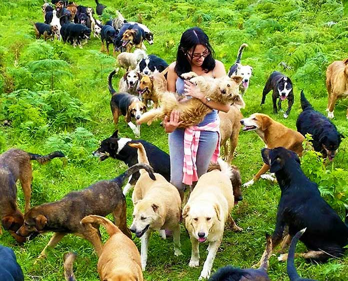

CASA HOGAR DE PERROS

¿QUE SON LOS REFUGIOS?
Un Refugio de Adopción Animal, es, un espacio físico, el cual, debe contar con todo lo necesario para el alojamiento y cuidado de animales
callejeros (usualmente perros y gatos), perdidos, abandonados o entregados.
¿QUE HACEN LOS REFUGIOS?
Se encargan de brindarle a los animales que tienen en resguardo todos los cuidados básicos que necesitan para vivir con bienestar dándoles alimento, cuidados veterinarios, limpieza, pero, principalmente,
la función de un Refugio es encontrar a una persona que adopte a los animales bajo su resguardo.
Para los animales, el Refugio ofrece todos los cuidados que necesita un animal, dándoles comida, techo, vigilancia, vigilancia veterinaria y actividades recreativas.
Para las personas, el Refugio ofrece su atención para adopciones, pero, también puede incluir eventos o pasarelas de adopción, e inclusive, hay refugios que
ofrecen talleres para sensibilizar a las personas sobre la tenencia responsable y la adopción animal.
Casi siempre, los Refugios, son organizaciones sin fines de lucro cuya única forma de subsistencia es la recolección de fondos mediante donativos, campañas y la cuota de recuperación que se impone en la adopción o rescate.
El proceso de adopcion depende de cada Refugio, pero, en general comienza con la selección de la mascota ya sea en el Refugio o a través de
una plataforma digital, después se realiza una entrevista para conocer al adoptante y ver si es viable para poder adoptar, finalmente, se cierra este proceso con una
especie de contrato/compromiso con el cuidado de la mascota.